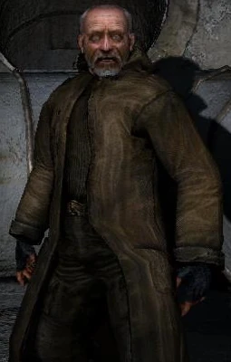

Доктор Кайманов
Хто це?
Доктор Кайманов, більш відомий як просто Доктор — ключовий сюжетний персонаж «S.T.A.L.K.E.R.: Тінь Чорнобиля»
та «S.T.A.L.K.E.R. 2: Серце Чорнобиля», а також згадуваний персонаж «S.T.A.L.K.E.R.: Чисте Небо» та
«S.T.A.L.K.E.R.: Поклик Прип’яті».
Він колишній соратник Стрільця та член його групи, один із небагатьох, хто зберіг спогади про ранні
події у Зоні. Володіє глибокими знаннями про її природу, артефакти й експерименти ЧАЕС, відіграючи
важливу роль у розкритті її таємниць.
Передісторія
Під час першого рейду до Центру Зони, Стрілець зазнав тяжких поранень у перестрілці з монолитовцями. Привид і Клик змогли донести його до Доктора, який врятував життя сталкеру. Вилікувавшись, Стрілець рушив на північ, але невдовзі потрапив під сильний викид і знову повернувся до Доктора з важкими травмами. Знов вилікувавшись, Стрілець почав планувати другий похід до Центру. Доктору нічого не залишалося, крім як відпустити Стрільця, давши йому на дорогу набір медикаментів.
Доктор Кайманов в різних частинах S.T.A.L.K.E.R.
Доктор Каймановь в «S.T.A.L.K.E.R.: Чисте Небо»
Доктор безпосередньо в грі не з’являється, але згадується в КПК зі схованки Стрільця, яку ми знаходимо під час сюжетного завдання, а також у легенді, яку розповідає майор Звягінцев.
Доктор Кайманов в «S.T.A.L.K.E.R.: Тінь Чорнобиля»
Доктор вперше з’являється в кат-сцені після вимкнення установки в лабораторії Х16. Показано, як Стрілець заходить до хижі Доктора,
тримаючи в руці невідомий артефакт, а Доктор просить його не йти до Центру Зони. Далі уривками показано, як Доктор лікує важко пораненого
Стрільця. Після цього сталкер знову вирушає на Північ, а Доктор проводжає його поглядом.
Оглянувши тіло Привида, Мічений чує в аудіозаписі КПК підказку щодо місцезнаходження Доктора. Дізнавшись його місце перебування у Провідника,
Мічений вирушає до схованки Стрілка, але по дорозі підривається на розтяжці, встановленій Доктором за наказом Стрільця. Доктор пояснює Міченому,
що він і є Стрілець. Після цього він каже, що потрібно забрати декодер у схованці в Прип’яті. Починається квест «Схованка в Прип’яті».
Якщо в діалозі з Представником «С-Свідомості» Мічений обере варіант приєднатися до угруповання, то в кат-сцені буде показано, як Доктор стоїть на
галявині, дивується зникненню Стрільця, після чого йде.

Доктор Кайманов в «S.T.A.L.K.E.R.: Поклик Прип'яті»
Доктор безпосередньо в грі не з’являється, але згадується Стрільцем у записці до Привида.
Доктор Кайманов в «S.T.A.L.K.E.R.: Серце Чорнобиля»
Коли Скіф вперше зустрічає Доктора на галявині перед його домом, по наведенню тим чи іншим способом отриманої від сталкерів-мисливців, то
там лежить поранений Бродяга , якого незадовго до цього відправив Фауст , щоб вбити Доктора . Незважаючи на це, Доктор наполягає на тому,
щоб Скіф знайшов регенератор для лікування монолітівця . Доктор дізнається у Скіфа про його розмову з представником С-Свідомості ,
після чого починає вірити в існування Тонкої матерії .
Коли Скіф повертається з регенератором, то виявляє, що зцілений Бродяга намагається вбити Доктора, а потім переключається на самого Скіфа.
Доктор, трохи повагавшись, протикає шию монолитовцю. Він вважав це вбивство виправданим (Доктор визнає, що не може врятувати всіх ). Після
цього Доктор відкриває таємницю своєї біографії Скіфу і наводить його на X3 , де повинен знаходитися Сигнатурний картридж , необхідний для перевірки
гіпотези про існування Тонкої матерії. Після прибуття Скіфа до станції «Орбіта» Доктор просить відвідати його старий кабінет та повідомляє код .
Якщо Скіф вибирає бік «Іскри» (а точніше, Шраму ) або «Варти» , то Доктор більше не з'явиться в сюжеті.
Якщо Скіф вибирає бік Стрілка , то надалі повинен буде зробити ще один вибір: вбити Доктора (той спокійно прийме свою долю)
або залишити його в живих. У цьому випадку Доктор залишиться стояти зовні свого будинку під час Викиду , жестом продемонструвавши, що не збирається
ховатися від нього. Його доля не буде розкрита. У цьому варіанті розвитку подій Ріхтер припустить, що його забрала Зона. Як випливає з кінцівки
«Проект Y» , Фауст підмінив Доктора. В який момент це сталося (до, під час подій гри або наприкінці), не пояснюється.